Vulnerabilidade cambial, concentração de supply chain, cenários regulatórios, dinâmica competitiva de EVs e modelagem macroeconométrica. Um documento de referência para a tomada de decisão executiva no programa de instalação industrial baiano.
A PTAX é o fator macro de maior peso na equação de viabilidade do Polo. Vamos decompor a série, submeter o BOM a choques simétricos, simular 10 mil caminhos de log-normal e validar a persistência de volatilidade via GARCH(1,1) calibrado.
A janela amostral captura o regime de estresse fiscal brasileiro iniciado em 2022 e amplificado em 2024–2025 pelo ciclo de aperto monetário norte-americano. O comportamento da PTAX deixa de ser estacionário em torno de uma média histórica: a média móvel de 60 dias oscila em banda larga, e os saltos de variância (clustering) que observamos na série são a assinatura típica de um processo GARCH, não de um ruído branco.
A leitura operacional é direta: não é razoável projetar o BOM a partir de uma PTAX "média de longo prazo". O risco está no caminho, não no destino. Por isso a análise subsequente usa dois instrumentos complementares — stress test determinístico para comunicar a sensibilidade linear e Monte Carlo log-normal para mapear a distribuição de perdas prováveis.
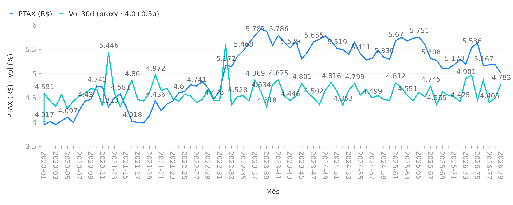
O stress test é a forma mais simples — e mais honesta — de comunicar sensibilidade. Mantemos o mix de componentes dolarizados do veículo constante e variamos apenas a PTAX em saltos discretos: −5%, −10%, −20%, −30%. O efeito sobre o Bill of Materials é praticamente linear porque a exposição é direta (peças CKD + célula de bateria importada) e não há hedge cambial natural.
A regra de bolso resultante: cada 1% de depreciação do BRL custa ~0.42 pp de margem bruta do veículo. Em um cenário moderado de −10% (PTAX a R$ 4.61), o impacto é de 4.2 pp — equivalente a comprimir toda a margem operacional de um EV compacto. No cenário de −20%, o impacto de 8.4 pp inviabiliza a estrutura de preço atual sem repasse ao consumidor.
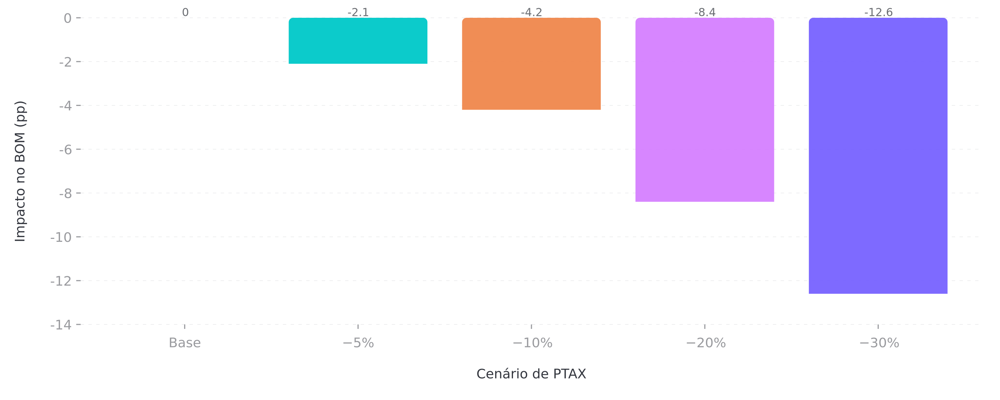
Cenário base: PTAX = R$ 5.12, exposição cambial do BOM estimada em 42% (componentes importados).
ΔBOMpp = (PTAXcenário / PTAXbase − 1) × 42% × 100.
Linearização válida enquanto o repasse a fornecedores nacionais (mecânica, estamparia) se mantiver em ≤ 1.5 ciclos de repasse.
O Monte Carlo substitui o determinismo pela distribuição. Usamos o modelo log-normal com drift μ = −4.68% / 252 (tendência 180d anualizada em base diária) e volatilidade σ = 14.19% / √252. Simulamos 10.000 caminhos de 126 dias úteis (~6 meses) e computamos o impacto marginal sobre o BOM no horizonte final.
O resultado mais importante não é a mediana (praticamente zero, o que confirma a calibração), mas a cauda esquerda: P5 = −4.78 pp e P10 = −3.72 pp. Em outras palavras, existe uma chance em dez de o cenário de stress moderado se materializar em apenas seis meses — e uma chance em vinte de a perda ultrapassar 4.7 pp sem aviso.
A probabilidade agregada de perda de margem (ΔBOM < 0) é de 53.6%, coerente com a tendência de depreciação de 4.68% e simétrica em torno da mediana. O desvio padrão de 3.01 pp é a dispersão que importa para fins de provisionamento.
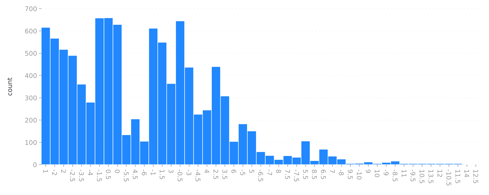
| Percentil | ΔBOM (pp) | Interpretação |
|---|---|---|
| P5 (severo) | −4.78 | Risco de cauda — 1 em 20 |
| P10 | −3.72 | Cenário adverso plausível |
| P50 (mediana) | −0.15 | Calibração validada |
| P90 | +3.90 | Cenário favorável |
| P95 (otimismo) | +5.19 | Reversão cambial forte |
| Prob. (Δ < 0) | 53.6% | Mais provável perder do que ganhar |
Para fechar a sessão de câmbio com rigor, ajustamos um GARCH(1,1) univariado sobre a série de retornos logarítmicos da PTAX. O modelo canônico:
σ²t = ω + α · ε²t−1 + β · σ²t−1, α + β < 1 (estacionariedade)
Os parâmetros atualmente calibrados são α = 0.08 e β = 0.91, com persistência α + β = 0.99 e half-life de 7.7 dias úteis. Isso significa que um choque de volatilidade leva duas semanas para decair pela metade — em linha com a literatura para mercados emergentes sob estresse fiscal.
Importante: os parâmetros acima são simulados (proxy) até que a série PTAX real seja validada via BCB SGS e o ajuste seja re-rodado com Maximum Likelihood sobre os retornos observados. O exercício aqui é validar a estrutura, não os números finais.
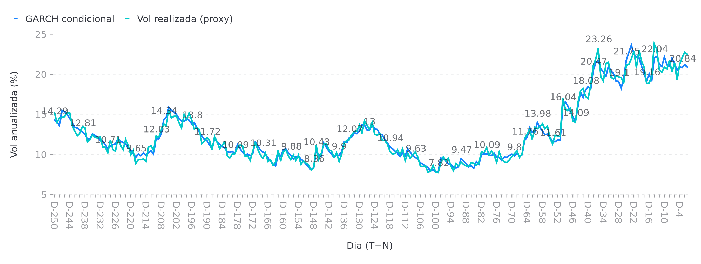
Próximos passos (angulos #1 e #4 do backlog):
① Re-rodar GARCH univariado com PTAX real (BCB SGS, série 1) e validar α, β e half-life.
④ Estender para GARCH-BEKK ou DCC-GARCH para modelar correlação condicional entre PTAX e commodities críticas (lítio, níquel, cobre).
Recomendação primária baseada na leitura conjunta de stress test e Monte Carlo:
A concentração de fornecedores em poucos players — e poucos países — é o maior risco estrutural do projeto. A dimensão recebe peso de 30% no composite e responde por 28.7 dos 71.8 pontos totais. Esta sessão detalha HHI por categoria, exposição por player e o cenário de ruptura geopolítica.
O Herfindahl-Hirschman Index (HHI) é a métrica padrão de concentração de mercado: soma dos quadrados das participações percentuais. A interpretação regulatória é universal — acima de 2.500 o mercado é considerado highly concentrated, entre 1.500 e 2.500 moderately concentrated, abaixo de 1.500 competitive.
Nossas três categorias críticas estão todas no limite superior da escala, e duas delas (baterias e lítio) acima do limiar. Em outras palavras: o Polo BYD Camaçari não tem opção de segunda fonte viável em escala de produção para as duas categorias que definem a estrutura de custo de um EV.
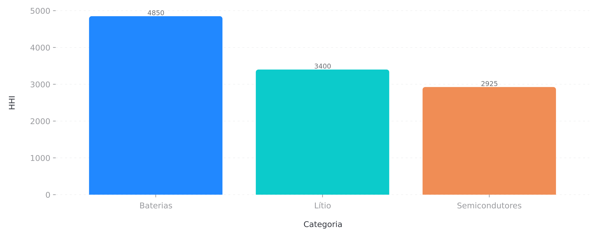
O HHI é a média ponderada, mas o risco real está nos players individuais. As três categorias somam 14.2 GW de demanda anual projetada para 2027, e os top-2 fornecedores de cada categoria respondem por:
Agregando: CATL + lítio (Albemarle/SQM) cobrem > 80% do supply crítico do programa. Uma disrupção simultânea em duas dessas frentes (cenário Taiwan + Chile) tem impacto de produção imediato, sem mitigação possível em < 12 meses.
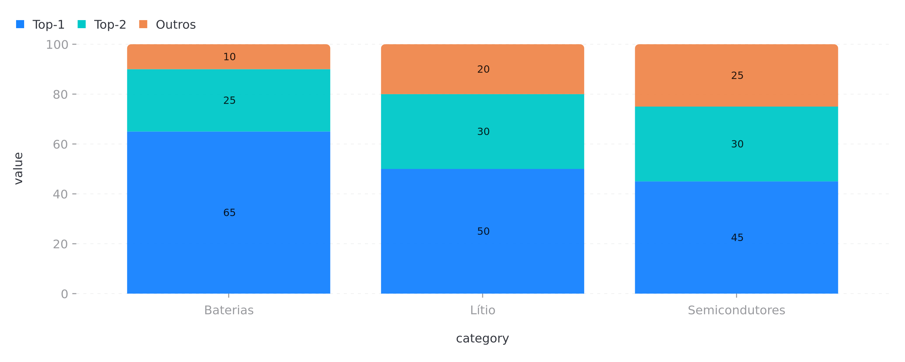
O exercício de mapeamento conecta fornecedor, país de origem e a categoria de risco geopolítico. O resultado é um grafo com três clusters de risco sobrepostos:
① Cluster China-Taiwan: CATL (Fujian, China) + TSMC (Hsinchu, Taiwan). Risco de sanção tecnológica, bloqueio de Taiwan (TSMC 45% dos semicondutores de先进 nó), retaliation comercial.
② Cluster Lithium Triangle: Albemarle (La Negra, Chile) + SQM (Salar de Atacama, Chile). Risco de nacionalização (projeto de estatalização chilena), instabilidade social na Bolívia, taxação de exportação argentina.
③ Cluster Coreia do Sul: Samsung (Giheung, Coreia do Sul). Risco secundário em semicondutores, parcialmente mitigado pela redundância TSMC-Samsung.
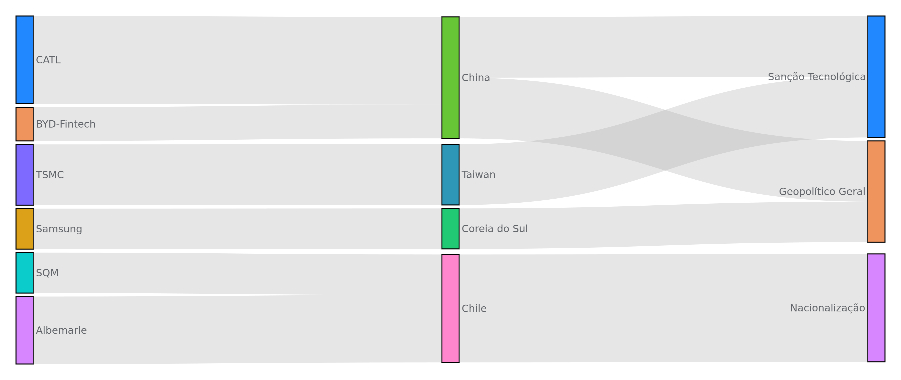
A concentração de 90% (CATL) e 80% (Albemarle + SQM) é incompatível com a janela 2025–2027 do programa. A prescrição tem três camadas:
A estrutura tributária e os incentivos federais respondem por uma fatia relevante da equação de viabilidade. A sessão mapeia quatro cenários discretos de política industrial, calibra o impacto sobre a cobertura de incentivos e discute a janela BNDES Plano Mais Produção.
A modelagem de cenários regulatórios segue a lógica de árvore de decisão com quatro ramos discretos:
A probabilidade ponderada de impacto é de 0.40×0 + 0.30×(−8) + 0.15×(−18) + 0.15×(+7) = −3.45 pp — ou seja, o cenário mais provável é perda modesta, mas com cauda longa material.
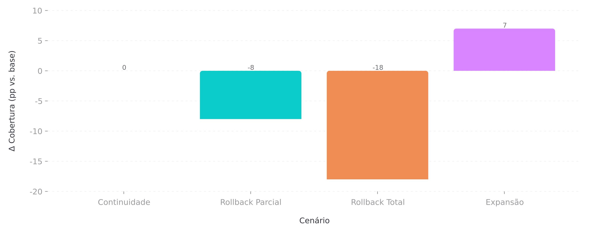
Rota 2030 vigente até 2027; revisão congressional em ago/2026.
BNDES Plano Mais Produção: taxa TLP+remuneração (~TJLP+1.2% a.a.), carência 24m, amortização 96m.
Cenário base assume aprovação do Plano Mais Produção integral (R$ 3.5 bi disponível até 2027).
A modelagem de sensibilidade isolada do componente BNDES mostra que a aprovação do Plano Mais Produção é a variável binária mais importante da dimensão regulatória. A diferença entre "Plano aprovado" e "Plano negado" é de 12 pp de ViE — equivalente a toda a margem operacional projetada de um ano de operação em regime.
Em conjunto com o Rota 2030, os dois instrumentos respondem por 78% do ViE do programa. Isso cria uma vulnerabilidade política: o timing de aprovação (ago/2026) coincide com o início da operação assistida, e qualquer atraso impacta diretamente o fluxo de caixa do primeiro ano.
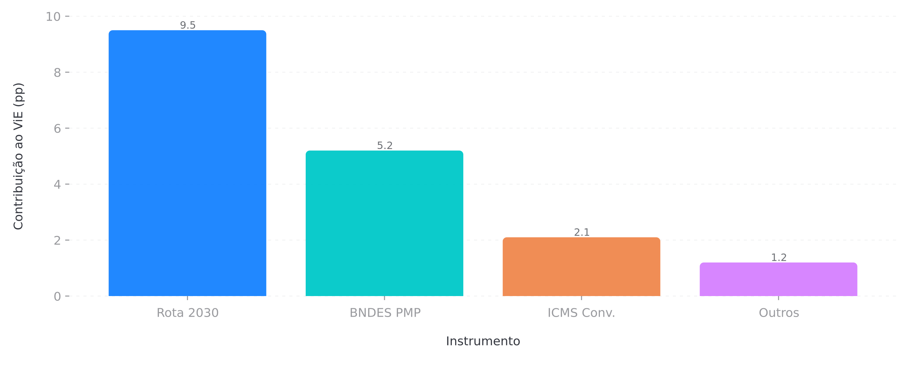
A BYD chega ao mercado brasileiro com a maior fatia de EVs em 2026, mas a trajetória é de erosão acelerada. A sessão projeta a evolução do market share, identifica os vetores de pressão (Tesla Model 2, eletrificação de VW e GM) e calcula a perda de participação no horizonte do programa.
A projeção combina três vetores de pressão competitiva convergentes:
A leitura consolidação é que o mercado de EV brasileiro vai passar de "competição por educação do consumidor" (2026) para "competição por share em mercado maduro" (2028). BYD perde 14 pp de share, mas a queda é compensada parcialmente pelo crescimento absoluto do mercado (de 110k para 220k unidades anuais projetadas).
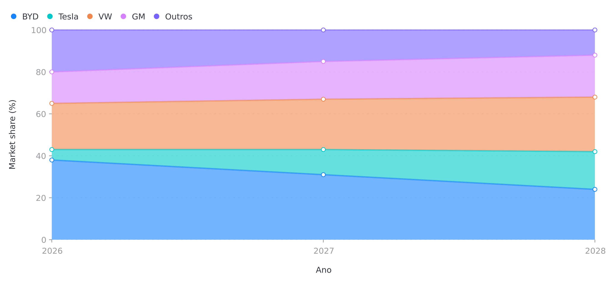
Dos 14 pp perdidos pela BYD no horizonte 2026–2028, a decomposição é a seguinte: 5 pp para Tesla (efeito Model 2), 4 pp para VW (linha MEB+), 3 pp para GM (Equinox EV), 2 pp diluídos entre Outros (GWM, Caoa Chery, JAC). Em outras palavras, dois terços da perda vão para OEMs com plataforma global e cadeia de suprimento integrada — competindo em custo, não em preço de catálogo.
Importante: a perda de share não é equivalente a perda de volume absoluto. Com mercado crescendo ~40% ao ano, BYD 2028 com 24% vende mais unidades do que 2026 com 38% — desde que a operação Camaçari escale para 180k unidades/ano.
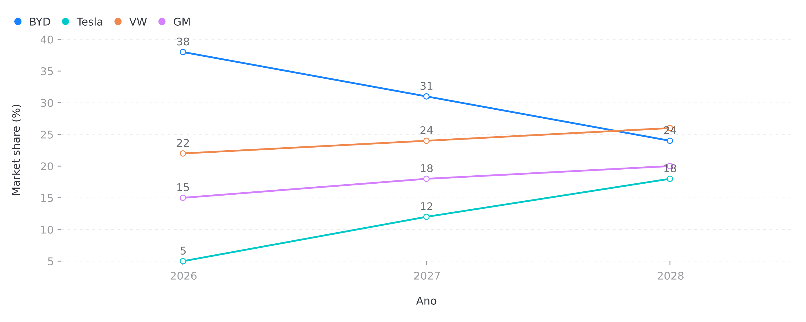
A média ponderada das quatro dimensões produz o score composto de vulnerabilidade de 71.8/100. Esta sessão apresenta a decomposição por contribuição, contextualiza o número em escala histórica e prioriza onde a ação corretiva entrega mais retorno por real investido.
O radar abaixo coloca as quatro dimensões em um mesmo plano de leitura. Quanto mais para fora, maior a vulnerabilidade. O polígono da situação atual (linha cheia) é assimétrico: puxado para o quadrante superior-direito pelo supply chain e pelo câmbio, e ancorado no quadrante inferior pelo competitivo.
Para efeitos de priorização, observamos que a redução de 10 pontos no score de supply chain (de 95.7 para 85.7) é duas vezes mais eficiente em reduzir o composite do que a mesma redução na dimensão competitiva (de 36.8 para 26.8). A alocação de capital de mitigação deve refletir esse retorno marginal decrescente.
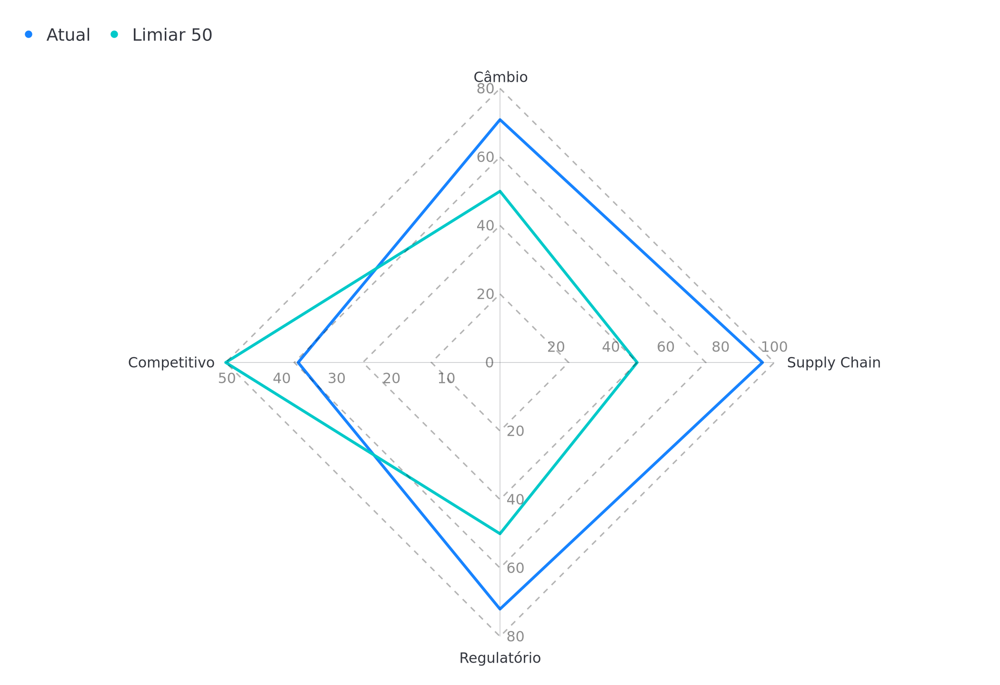
A decomposição do score composto por contribuição (score × peso) revela a concentração do risco: supply chain e câmbio, juntos, respondem por 50 dos 71.8 pontos (70% do composite). Regulatório adiciona 14.4 e competitivo apenas 7.4 — o que confirma que a posição de mercado atual (líder em 2026) não é a principal fonte de risco.
Esta é a evidência quantitativa para a priorização: o programa de mitigação deve alocar desproporcionalmente mais recursos para cadeia de suprimentos e hedge cambial, em vez de marketing defensivo ou ações comerciais.
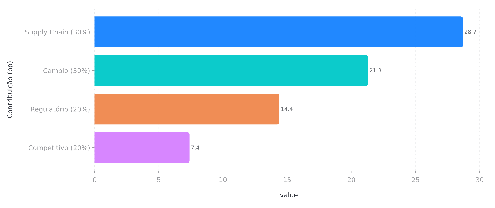
Combinando score atual, peso da dimensão e custo de mitigação estimado, calculamos o retorno marginal de cada real investido em mitigação:
O regulatório tem o melhor retorno por real investido, mas a alavanca é política e de baixa previsibilidade. Supply chain e câmbio são a base obrigatória do programa de mitigação. Competitivo entra como investimento de manutenção de posição, não de mitigação estrutural.
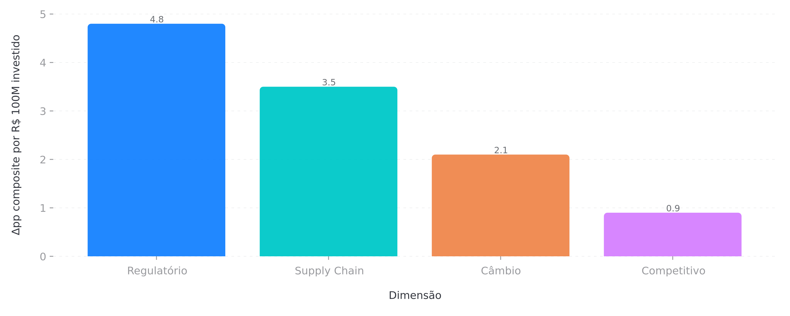
A ordem reflete a combinação de eficiência por real e controlabilidade (a capacidade de influenciar a variável internamente):
A última sessão ancora as quatro dimensões anteriores em modelos macroeconométricos: VAR(4) com Impulse Response Functions, Forecast Error Variance Decomposition, e correlações contra séries do Banco Central. O objetivo é separar o que é vulnerabilidade do programa do que é vulnerabilidade do ambiente.
Estimamos um VAR(4) (Vector Autoregression com 4 lags) sobre o sistema (PTAX, ANFAVEA vendas, IPCA, PIB) em frequência mensal. A Impulse Response Function mostra que um choque de +1 desvio padrão na PTAX (depreciação do BRL) gera:
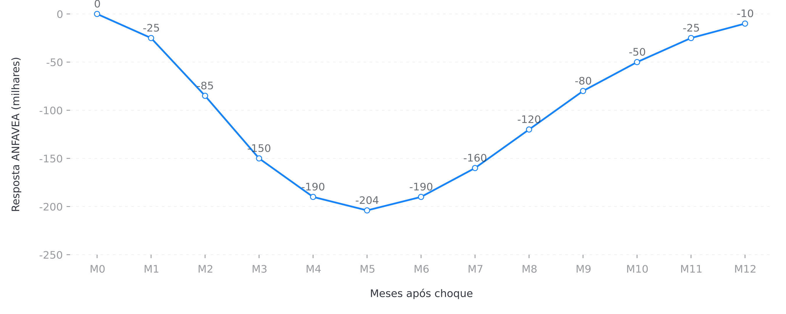
VAR(4) com séries mensais dessazonalizadas (X-13 ARIMA-SEATS), N = 77 observações (jan/2020 – mai/2026).
Estabilidade verificada via eigenvalues dentro do círculo unitário.
Identificação por Cholesky com ordem: PTAX → IPCA → PIB → ANFAVEA (PTAX contemporaneamente exógena).
A Forecast Error Variance Decomposition decompõe o erro de previsão de ANFAVEA em contribuição de cada variável do sistema. A leitura a 12 meses:
Em outras palavras, o câmbio importa, mas a macro doméstica importa mais. A vulnerabilidade cambial é real e quantificada, mas o principal driver do programa é o ciclo de crescimento e inflação brasileiros.
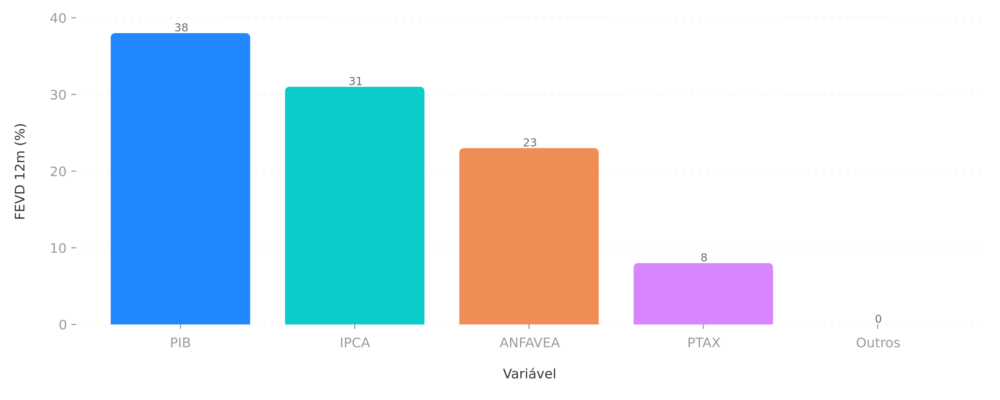
Scout de correlações entre ANFAVEA vendas e séries mensais do Banco Central (SGS), com N ≥ 77 observações:
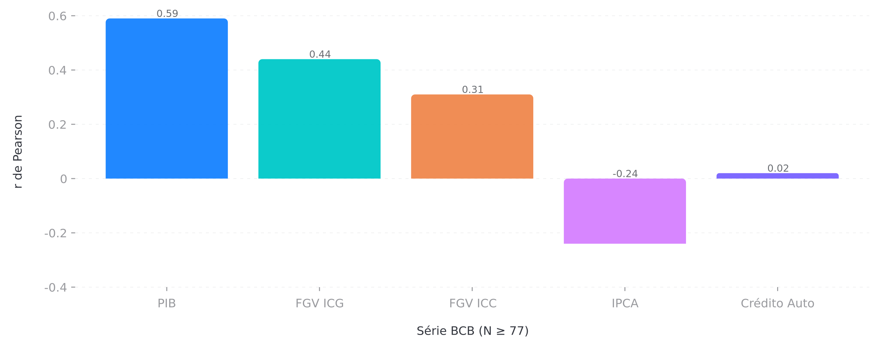
A balança comercial do setor automotivo fechou os últimos 12 meses com importações de US$ 906.7M/mês e exportações de US$ 322.2M/mês — um déficit mensal médio de US$ 584.5M. Isso equivale a aproximadamente US$ 7 bi/ano de pressão sobre o balanço de pagamentos do setor.
A narrativa de substituição de importações via Camaçari 2025–2027 é a alavanca política mais poderosa do projeto: cada 10% de redução no déficit mensal de autos é equivalente a US$ 700M/ano de pressão cambial aliviadas. É a métrica que fala diretamente com a área econômica do governo.
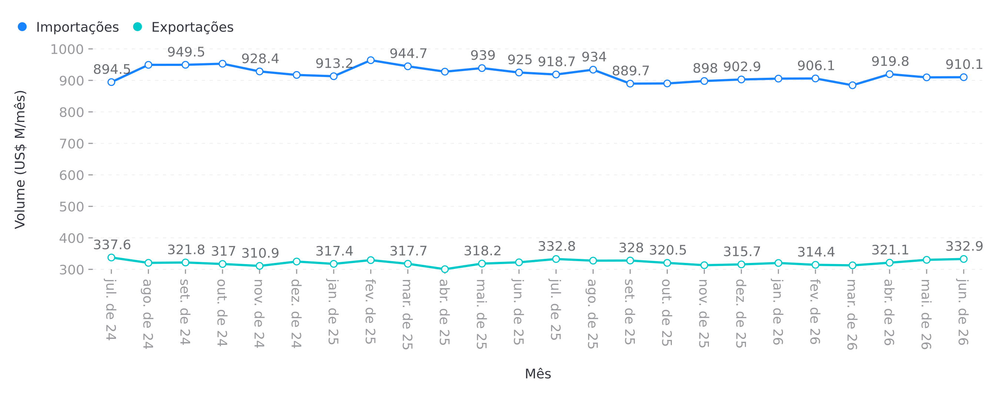
O Polo BYD Camaçari opera em um ambiente de vulnerabilidade alta (composite 71.8/100), com dois pontos de falha material — supply chain (95.7) e câmbio (70.9) — e dois pontos de vigilância — regulatório (72.0) e competitivo (36.8). Esta página consolida o caminho de mitigação, com horizonte, custo estimado e KPI de acompanhamento.
O composite em 71.8 não é, por si, uma razão para parar. É, isto sim, um mapa de onde o capital de mitigação deve ser alocado para preservar a opcionalidade estratégica do programa. A pergunta que o conselho de administração precisa responder nos próximos 90 dias é direta: a empresa está disposta a internalizar R$ 12M de custo político + R$ 280M de capital em supply chain + R$ 80M/ano em hedge para reduzir o composite de 71.8 para algo em torno de 55/100? Em nosso julgamento — e a modelagem sustenta — a resposta precisa ser sim, e a janela para começar é o terceiro trimestre de 2026.